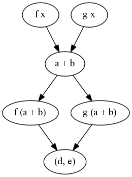

Haskell中关于并行性和并行性的权威参考是Simon Marlow的文章。本节将仅gloss over(掩盖)这些主题，因为在本书中对它们进行了更好的解释.
請看:
1 | forkIO :: IO () -> IO ThreadId |
Haskell线程的产生极其便宜，仅使用1.5KB的RAM(具体取决于平台)，并且比C语言中的pthread便宜得多。调用forkIO106次只需不到1s即可完成。此外，Haskell中的函数纯度还确保即使在计算过程中也几乎可以随时终止线程而无需担心。
請看:
Sparks
Haskell中最基本的并行性atom是spark。这是对GHC运行时的提示: 可以并行将计算评估为weak head normal form(弱头范式)。1
2
3
4
5rpar :: a -> Eval a
rseq :: Strategy a
rdeepseq :: NFData a => Strategy a
runEval :: Eval a -> a
rpar a产生一个独立的spark，该spark逐渐演变为weak head normal form，并将计算结果放入spark池中。
当运行时确定有可用的CPU可以评估计算时，它将评估(转换)spark。
如果程序的主线程是spark的评估器, 则spark被称为fizzled(模糊)。Fizzling通常是不好的，它表明逻辑或并行性策略不适用于正在评估的工作。
spark池也被限制为(但用户可调)默认值8000(从GHC 7.8.3开始)。超出此限制创建的spark被称为overflow(溢出)。1
2-- Evaluates the arguments to f in parallel before application.
par2 f x y = x `rpar` y `rpar` f x y
rseq的参数在评估继续之前强制评估spark。1
2
3
4
5
6Action Description
-----------------------------------------
Fizzled 主线程已经评估了结果值，因此无需转换spark。
Dud The 已对表达式求值，将返回计算值，并且不转换spark。
GC'd spark被添加到spark池中，但是结果没有被引用，因此它被垃圾收集。
Overflowed `spawning`(生成)时spark池中的空间不足。
并行运行时对于使用spark是必需的，并且生成的程序必须使用-threaded进行编译。
另外，程序本身可以通过-rtsopts指定运行时选项，例如要使用的内核数量。1
2ghc -threaded -rtsopts program.hs
./program +RTS -s N8 -- use 8 cores
通过传递-s标志，可以要求运行时dump(转储)有关spark评估的信息。1
2
3
4
5
6
7
8
9
10
11$ ./spark +RTS -N4 -s
Tot time (elapsed) Avg pause Max pause
Gen 0 5 colls, 5 par 0.02s 0.01s 0.0017s 0.0048s
Gen 1 3 colls, 2 par 0.00s 0.00s 0.0004s 0.0007s
Parallel GC work balance: 1.83% (serial 0%, perfect 100%)
TASKS: 6 (1 bound, 5 peak workers (5 total), using -N4)
SPARKS: 20000 (20000 converted, 0 overflowed, 0 dud, 0 GC'd, 0 fizzled)
并行计算本身是在Eval monad中排序的，用runEval进行计算本身就是一个纯计算。1
2
3
4
5
6
7example :: (a -> b) -> a -> a -> (b, b)
example f x y = runEval $ do
a <- rpar $ f x
b <- rpar $ f y
rseq a
rseq b
return (a, b)
Threadscope
传递标志-l会生成事件日志，该事件日志可以用threadscope库呈现。1
2
3$ ghc -O2 -threaded -rtsopts -eventlog Example.hs
$ ./program +RTS -N4 -l
$ threadscope Example.eventlog

有关使用Threadscope解释和分析的详细指南，请参见Simon Marlows的Parallel and Concurrent Programming in Haskell。
請看:
Strategies (策略)
1 | type Strategy a = a -> Eval a |
Sparks本身构成了称为strategies(策略)的高级并行结构的基础，这些结构使Spark的创建适合所评估的计算或数据结构。
例如，如果我们想同时评估一个元组的两个元素，我们可以创建一个使用spark来评估该元组两侧的strategies。
1 | import Control.Parallel.Strategies |
这种模式如此频繁地出现，组合器using可用于等效地以operator-like的形式写成，这在某些方面可能更具视觉吸引力。1
2
3
4
5using :: a -> Strategy a -> a
x `using` s = runEval (s x)
parallel ::: (Int, Int)
parallel = (fib 30, fib 31) `using` parPair
对于一个不太复杂的示例，请考虑一个并行的parmap，它将一个纯函数映射到一个并行的值列表上。1
2
3
4
5
6
7
8
9
10
11import Control.Parallel.Strategies
parMap' :: (a -> b) -> [a] -> Eval [b]
parMap' f [] = return []
parMap' f (a:as) = do
b <- rpar (f a)
bs <- parMap' f as
return (b:bs)
result :: [Int]
result = runEval $ parMap' (+1) [1..1000]
上面的函数非常有用，但是如果需要对参数的求值进行并行处理，而不仅仅是简单的弱首范式，则会破坏这些函数。
例如，如果rpar的参数是一个嵌套的构造函数，我们希望将评估表达式的整个部分并行化为normal form(普通形式)，而不只是outer layer(外层)。
因此，我们想对我们的策略进行generalize(概括)，以便可以将参数的评估策略作为参数传递给该策略。
Control.Parallel.Strategies包含rpar的通用版本，该版本在Eval monad的rpar计算中嵌入了附加的评估逻辑。1
rparWith :: Strategy a -> Strategy a
现在，使用deepseq库，我们可以构建rseq的Strategy变体，其评估结果为full normal form(完整范式)。1
2rdeepseq :: NFData a => Strategy a
rdeepseq x = rseq (force x)
现在，我们可以创建一个采用两个策略的higher-order(高阶)策略，它本身会产生一个计算，该计算在被评估时在其调度中使用传递的策略。1
2
3
4
5
6
7
8
9
10
11
12
13
14
15
16
17
18
19
20
21
22
23
24
25
26
27
28import Control.DeepSeq
import Control.Parallel.Strategies
evalPair :: Strategy a -> Strategy b -> Strategy (a, b)
evalPair sa sb (a, b) = do
a' <- sa a
b' <- sb b
return (a', b')
parPair :: Strategy a -> Strategy b -> Strategy (a, b)
parPair sa sb = evalPair (rparWith sa) (rparWith sb)
fib :: Int -> Int
fib 0 = 0
fib 1 = 1
fib n = fib (n-1) + fib (n-2)
serial :: ([Int], [Int])
serial = (a, b)
where
a = fmap fib [0..30]
b = fmap fib [1..30]
parallel :: ([Int], [Int])
parallel = (a, b) `using` evalPair rdeepseq rdeepseq
where
a = fmap fib [0..30]
b = fmap fib [1..30]
这些模式与其他几种通用形式和组合器一起在Strategies库中实现，用于组合策略以适合许多不同的并行计算。1
2
3
4parTraverse :: Traversable t => Strategy a -> Strategy (t a)
dot :: Strategy a -> Strategy a -> Strategy a
($||) :: (a -> b) -> Strategy a -> a -> b
(.||) :: (b -> c) -> Strategy b -> (a -> b) -> a -> c
請看:
STM
1 | atomically :: STM a -> IO a |
软件事务内存是一种保证并行计算中值原子性的技术，这样所有上下文在读写时都能看到相同的数据，保证不会导致不一致的状态。Haskell的纯度保证了STM内的事务是纯净的，并且在提交失败时总是可以回滚。1
2
3
4
5
6
7
8
9
10
11
12
13
14
15
16
17
18
19
20
21
22
23
24
25
26
27
28
29
30
31
32
33
34
35
36
37
38
39
40
41import Control.Monad
import Control.Concurrent
import Control.Concurrent.STM
type Account = TVar Double
transfer :: Account -> Account -> Double -> STM ()
transfer from to amount = do
available <- readTVar from
when (amount > available) retry
modifyTVar from (+ (-amount))
modifyTVar to (+ amount)
-- Threads are scheduled non-deterministically.
-- 线程是不确定性调度的.
actions :: Account -> Account -> [IO ThreadId]
actions a b = map forkIO [
-- transfer to
atomically (transfer a b 10)
, atomically (transfer a b (-20))
, atomically (transfer a b 30)
-- transfer back
, atomically (transfer a b (-30))
, atomically (transfer a b 20)
, atomically (transfer a b (-10))
]
main :: IO ()
main = do
accountA <- atomically $ newTVar 60
accountB <- atomically $ newTVar 0
sequence_ (actions accountA accountB)
balanceA <- atomically $ readTVar accountA
balanceB <- atomically $ readTVar accountB
print $ balanceA == 60
print $ balanceB == 0
請看:
Monad Par
使用Par monad，我们将计算表示为数据流图，该数据流按forked(分叉)计算之间的connections(连接)顺序进行调度，这些分叉计算与IVar交换结果计算。1
2
3
4
5new :: Par (IVar a)
put :: NFData a => IVar a -> a -> Par ()
get :: IVar a -> Par a
fork :: Par () -> Par ()
spawn :: NFData a => Par a -> Par (IVar a)
1
2
3
4
5
6
7
8
9
10
11
12
13
14
15
16
17
18
19
20
21
22
23
24
25
26
27
28
29
30
31
32
33
34
35
36
37
38
39
40
41
42import Control.Monad
import Control.Monad.Par
f, g :: Int -> Int
f x = x + 10
g x = x * 10
-- f x g x
-- \ /
-- a + b
-- / \
-- f (a+b) g (a+b)
-- \ /
-- (d,e)
example1 :: Int -> (Int, Int)
example1 x = runPar $ do
[a,b,c,d,e] <- replicateM 5 new
fork (put a (f x))
fork (put b (g x))
a' <- get a
b' <- get b
fork (put c (a' + b'))
c' <- get c
fork (put d (f c'))
fork (put e (g c'))
d' <- get d
e' <- get e
return (d', e')
example2 :: [Int]
example2 = runPar $ do
xs <- parMap (+1) [1..25]
return xs
-- foldr (+) 0 (map (^2) [1..xs])
example3 :: Int -> Int
example3 n = runPar $ do
let range = (InclusiveRange 1 n)
let mapper x = return (x^2)
let reducer x y = return (x+y)
parMapReduceRangeThresh 10 range mapper reducer 0
async
async是一组在Control.Concurrent和STM之上工作的高级函數.1
2
3
4
5
6
7
8
9
10
11
12
13
14
15
16
17
18
19
20
21
22
23
24
25
26
27
28
29
30
31
32
33
34
35
36
37
38
39
40
41
42
43
44
45
46
47
48
49
50async :: IO a -> IO (Async a)
wait :: Async a -> IO a
cancel :: Async a -> IO ()
concurrently :: IO a -> IO b -> IO (a, b)
race :: IO a -> IO b -> IO (Either a b)
import Control.Monad
import Control.Applicative
import Control.Concurrent
import Control.Concurrent.Async
import Data.Time
timeit :: IO a -> IO (a,Double)
timeit io = do
t0 <- getCurrentTime
a <- io
t1 <- getCurrentTime
return (a, realToFrac (t1 `diffUTCTime` t0))
worker :: Int -> IO Int
worker n = do
-- simulate some work
threadDelay (10^2 * n)
return (n * n)
-- Spawn 2 threads in parallel, halt on both finished.
-- 并行生成2个线程，两个线程都完成時停止。
test1 :: IO (Int, Int)
test1 = do
val1 <- async $ worker 1000
val2 <- async $ worker 2000
(,) <$> wait val1 <*> wait val2
-- Spawn 2 threads in parallel, halt on first finished.
-- 并行生成2个线程，第一個完成时停止。
test2 :: IO (Either Int Int)
test2 = do
let val1 = worker 1000
let val2 = worker 2000
race val1 val2
-- Spawn 10000 threads in parallel, halt on all finished.
-- 并行生成10000个线程，全部完成时停止。
test3 :: IO [Int]
test3 = mapConcurrently worker [0..10000]
main :: IO ()
main = do
print =<< timeit test1
print =<< timeit test2
print =<< timeit test3